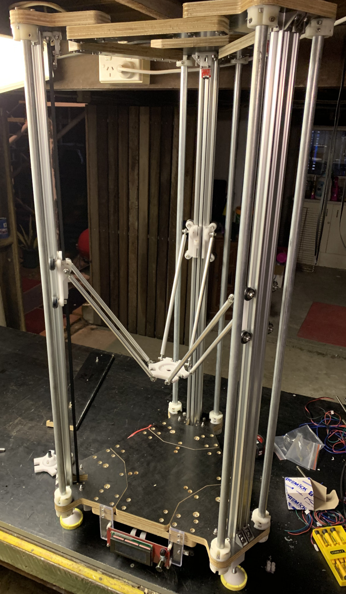
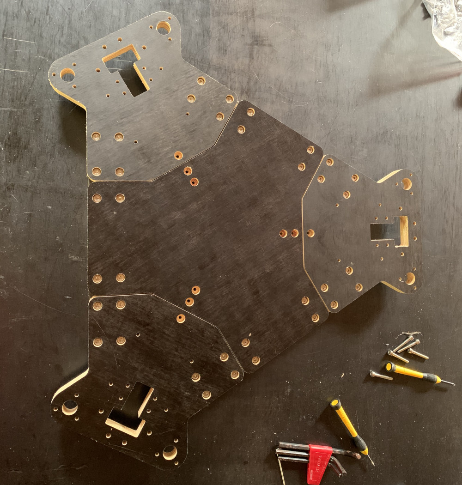

This is an ongoing personal project to create a ceramic extruding large Delta style 3D printer. This printer has been designed and built from scratch including the development of a plunger mechanism to control the ceramic flow.
V-slot aluminium extrusions and suitable bearings have been utilised for this propject and this printer stands 1200mm tall with a cylindrical print volume of 250mm diameter and 600mm height.
Carriage, brackets and framing have been produced either by 3D printed polymer or CNC cut in formply. As pictured, due to the large size of this printer and the limited footprint of my CNC router some framework has had to be redesigned into some smaller modular components.
In order to interact with the below model, left-click and drag or drag with finger to dolly, right-click and drag or two finger drag to pan and middle mouse button roll or pinch to zoom. The model may take a minute or two to load.